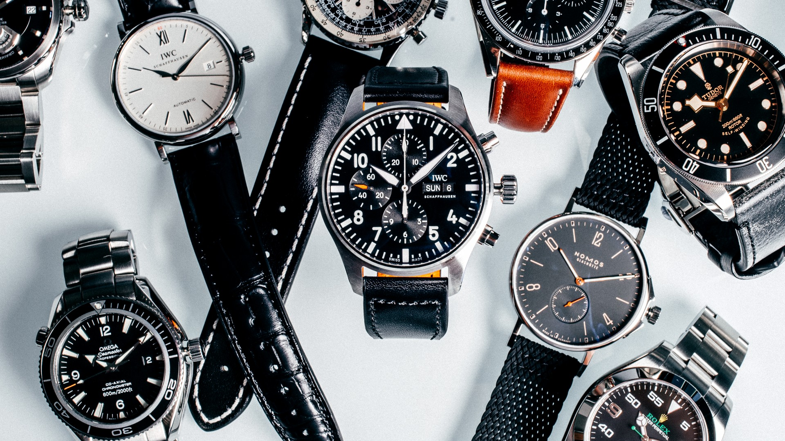
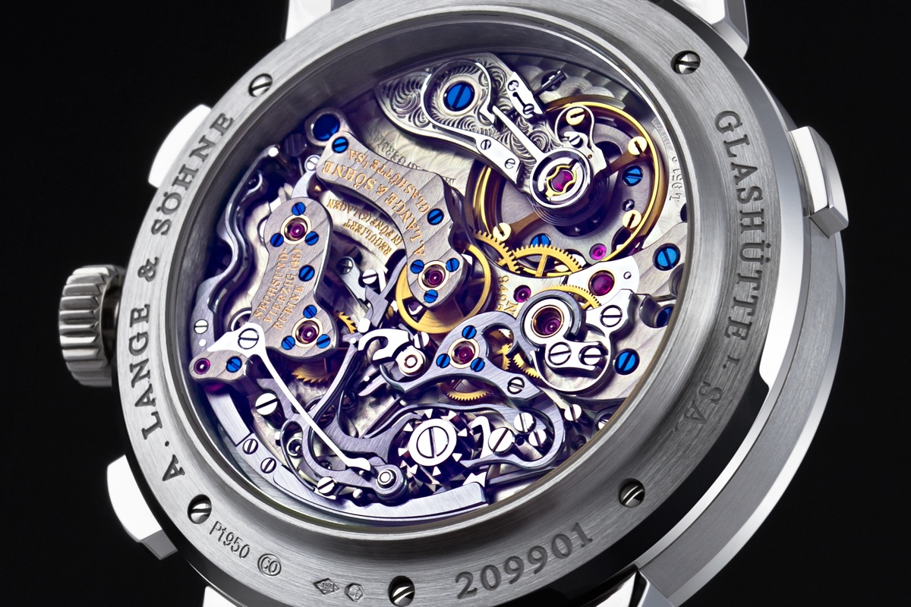

Watch Buying Guide
Choosing a watch to purchase is quite difficult as there are so many alternatives to choose from. First you need to consider what type of watch you want and when you are going to wear it. Then you need to consider the size of the watch so it matches your proportions. Then you need to decide on an actual model, and this is the most difficult part of all. Today, I'm going to share some of my recommendations for when you are going to decide on a watch to purchase.
The very first thing you are going to have to do is to set a budget for yourself. How much are you willing and able to spend on a watch acording to your own financial situation? Is it really a wise decision to spend x amount of money on a watch at the moment? At the end of the day a wrist watch is just a luxuty piece of jewlery and there are a lot more important things to spend you money on.
The second decision you're going to have to make is what type of watch you are looking for. Are you going to want to use it on a day to day basis? Is it going to be more of a special occasions piece? Or are you going to use it while working out and/or doing manual labor? My recommendation here is to analyze what types of clothing you normally wear and then match your watch a bit to it. If you normally wear a hoodie and a pair of slacky jeans, maybe a Patek Calatrava is a bit too dressy for you. If you are wearing a suit and tie, a Casio G-Shock will probably be a bit out of place. In this step, you are also going to choose if there are any particular complications you want. If you want a bit more information on different complications you can read my article about it here.
After you have a general idea on what type of watch you are looking for it's time to decide on what type of movement you want. There are pros and cons to every type of movement on the market so you're simply going to have to choose one depending on the purpose of your watch. If you are looking for a beater-watch, a quartz movement wouldn't hurt since they are usually very cheap and robust. In most other situations I would recommend going mechanical since I think they have a lot more character than most quartz watches. Objectively, quartz watches are superior in most ways. This is a fact. They are cheaper and easier to replace, more robust and they keep much better time. Simply put, you're going to choose between what is good, and what is beautiful.
A very common topic of discussion when it comes to watches is quality and value for money. This might sound quite obvious but quality in watches is not quite the same as in, let's say cars. When buying a car you look at the engine, horsepower, top speed, brakes, interior, seats and juts how it feels when driving. When looking at watches, people generally just look at the brand. For tips on some good brands at different price points, check out my article.
Even though the brand can be a general indicator of quality, it's not fool proof. There are a few points I like to look at when indentifying whether or not a watch is of high quality. These are; finishing, accuracy, crystal and the strap or bracelet.
When looking at the finish, close up shots on the internet are decent, although they can't come close to seeing the piece in person. The most important parts to look at are the edges and narrow points of the case. Thses are the most difficult parts to brush or polish and are therefor the best indicator of the time spent on the finishing.
Accuracy is quite a self explanatory point. Check general information shared by the manufacturer and look up the movement in question on the internet to see how it accurate it usually is.
The crystal can be a good way of showing quality although not always. A lot of times, especially in vintage inspired watches, companies decide to use acrylic crystals to give the watch a different feel. In my opinion, sapphire crystals are always the best when it comes to everyday use, but I have to agree that acrylic ones have a lot more charm. Mineral crystal is, in my opinion, inferior to both sapphire and acrylic. Seiko's own mineral crystal, hardlex, is an exception to this.
The strap and bracelet is the least important part of the watch and is generally overlooked. If you intend to wear the watch on it's factory bracelet then you should definitely pay attention to it, otherwise it's not very significant. You can always put your watch on aftermarket straps if you are unhappy with the original one so it's not the end of the world if you are dissatisfied.
When you have decided on a watch and it is finally time to make the purchase, it is wise to consider your options of vendors. Are you going to purchase it from an AD or are you going to go for the grey market? There are of course benefits of both and the decision is generally up to your own preference. ADs are more expensive but offer better warranties and guaranties if something goes wrong. The grey market offers a greater variety of watches at lower prices but are worse to deal with in case of any issues.